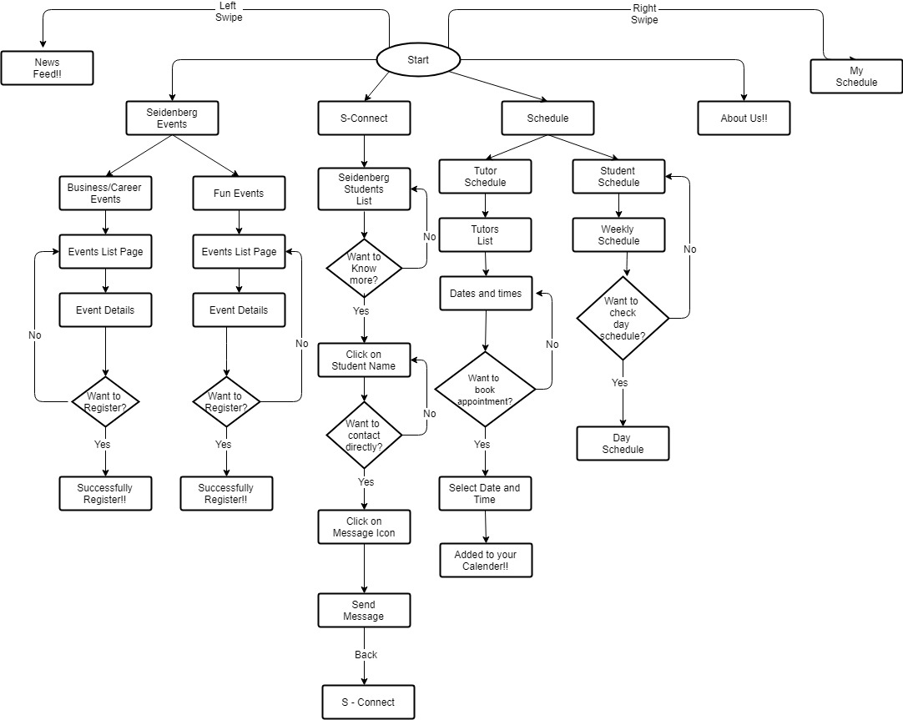
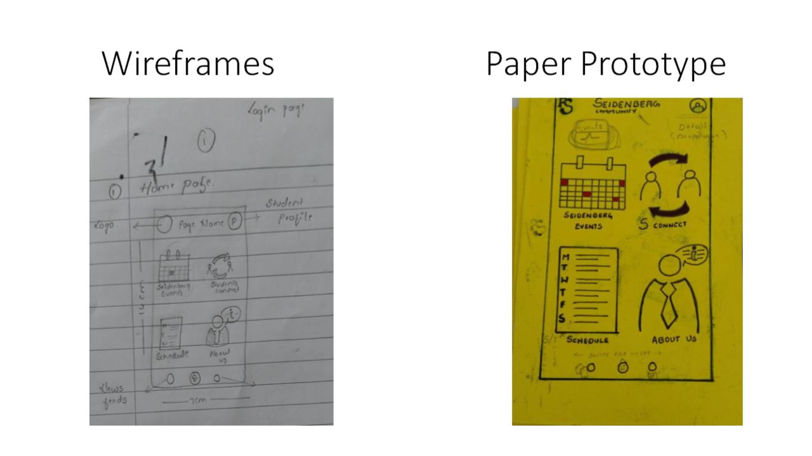

Seidenberg Community App!!
Every Little Thing Helps...
Created a Platform for students to get more invloved with Seidenberg School Coomunity.
Duration
January 2018 to May 2018
Focus
UX Research, Product Design, Visual Design
Tools
Sketch, InVision
The Problem
Students weren't aware of many things which were going on the campus such as Events, Who their advisor is? or How is Pace's alumini accessed?
Solution
After meeting the stakeholders and users, we came up with a solution dor an application which comprised of these 4 main features:
- News Feed
- Events
- Tech/Business Events
- Fun Events
- Calender
- Chat
Students were the users. Several surveys were conducted just to understand students' behaviors and their pain points.
Focus was mainly on the following key areas:
- Purpose of visit
- Last Event attended
- Where they seek help from, if they are in problem
After conducting user surveys the following were the findings:
- Students usually come to relax, chat with friends or visit professors in their office hours
- They were unaware Seidenberg events
- They usually used the front desk for help
- Students were unaware of many things such as tutoring, where they can find class rooms, their own schedule etc.
After analyzing user behavior I created user flow diagram.
User flow diagram is always the best thing to draw before wireframing or designing the feature. A user flow diagram generally covers almost all the possible interactions that a user could do with the system.

Wireframe, Paper Prototype and Usability Testing
Wireframing
This was one of the most challenging tasks in this project as the elements of the design interface had to be defined before proceeding to the usability testing.
A rough sketch of how the app design was devised and is depicted in the wireframe image below. Several different combinations of all the pages had to be tried out before starting for the paper prototyping and usability testing.
Paper Prototyping
The next step was to convert the wireframes into a fair copy which also can be called as the Paper prototype. This prototype for this application was developed considering the standard UX design principles. A sample home page of the same can be seen below.

Usability Testing
Tasks and Scenarios
-
Scenario: You want help in your java assignment from tutor.
Task:Schedule an appointment.
-
Scenario: You want to check out details of “NYTech Talent Fair”
Task:Using this app you want to register for this event. Where will you click?
-
Scenario: You want to reach out student who is in the same major.
Task:Search them using this app.
-
Scenario: You are bored with your class schedule.
Task:Register for an event, which will help you relax.
-
Scenario: You want find the people of same interest.
Task:Message them to connect.
-
Scenario:You want to check out your class schedule.
Task:Where will you click?
-
Scenario:You are bored with your current profile picture.
Task:You want to change it, where will you click?
-
Scenario:You want to check out news of Seidenberg.
Task:Where will you check?
After conducting the usability testing, several observations could be noted.
Usability Problems or Challenges
-
Tutoring Page
Users were having troubles understanding the function of the tutor portion of the prototype. How solution was to increase the size of the main buttons and dropdown to help user identify the main function of the tutor window.
-
Renaming some buttons
Because of the simplicity of the prototype task were easy to accomplish. Users were able to use their intuition and made right guesses when it came to making an appointment with a tutor. Our solution was to make buttons more clearly on their purpose. The group has to decide on how we are going to rename some of the buttons to help users make quicker decisions.
-
Back Function
Although we do not anticipate our users to make errors we have to take into account that users will make mistakes and we have made a better “go back” function that will allow users to go back to previous page.
-
Swiping function
Given the limitations of a paper prototype, swipe functions is not an affordance that is recognized right away without letting the user know that swiping is an option. Our solution to the problem was to add little icons at the bottom of the paper indicating what page you are on. There is 3 main screens available to the user. The main page is HOME to the left is NEWS and to the right is CALENDAR. We also have to let users know that swiping is an option due to the fact that in a paper prototype swiping is not an intuitive gesture.
-
Filters
An issue we saw arise was the organization of pages that contained a lot of profile or news. The solution was to add a filter to to help sort and find specific information. This has not been tested on the users but the group was confidant with this decision and adding a filter will help quicken any search.
Modifications
-
Define the buttons better(Make sure user knows that what are the buttons): decrease the size of each icon so that they look like button
-
Event page(Business and Fun events):
-
There should be a button to make the user know that they can get more information about the event by clicking on that.
-
Once the student clicks on the register button, a message should pop up indicating that the event is being added to the calendar.
-
Tutor Schedule:
-
Instead of providing an option to the student to select time for the tutor, each tutor should have a fixed schedule that would allow students to select their slot once they select the particular day, the tutor schedule for that day should be displayed.
-
There should be a drop down that allows to select the course that the student wants to be helped out in.
-
Once the student clicks on the add button, he should receive the confirmation pop up message indicating that “the event is being added to the calendar”. And if this clashes with any of his events in his schedule then the error message needs to be popped up indicating “Oops!! Its conflicting with your schedule “.
-
Filter to the student schedule that includes a dropdown that allows user to sort by last date added or modified or date created.
-
Add a page where students can post a common problem with something and they include the solution to the problem.